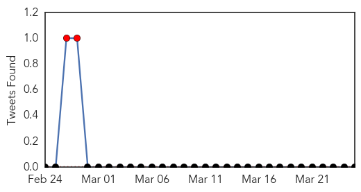
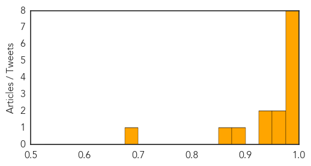

Hemmorhagic Fever
30-Day Web Trend
0 alerts, 0 warnings
30-Day Twitter Trend
0 alerts, 0 warnings

Article Locations

Article Confidences

Top Articles:
-
No articles found for Mar 25, 2015
Top Tweets:
-
No tweets found for Mar 25, 2015
Swine Flu
30-Day Web Trend
0 alerts, 2 warnings
30-Day Twitter Trend
7 alerts, 0 warnings

Article Locations

Article Confidences
Top Articles:
- 1.000
- Swine flu death toll in Turkey rises to 42
- 1.000
- Health minister denies swine flu outbreak amid 19 deaths in 6 day
- 1.000
- Swine flu death toll in Turkey rises to 42
- 1.000
- Swine flu death toll rises to 33, cases expected to drop
- 1.000
- Health minister rules out swine flu epidemic in Turkey
- 0.997
- 16 fresh cases of swine flu in Telangana
- 0.995
- State heal hubs ignore swine flu code
- 0.990
- World Socialist Web Site
- 0.963
- Swine flu scare back: 2 suspected deaths reported
- 0.955
- Five new swine flu cases in Bengal, CPI-M leader discharged
- 0.944
- South African national becomes 34th swine flu victim in Mumbai
- 0.942
- Five new swine flu cases in Bengal, CPI-M leader discharged
- 0.894
- Visa violators pursued in hospitals - Kuwait Times
- 0.853
- Mutated or not: H1N1 virus debate carried on amid deaths
- 0.683
- Mutated or not: H1N1 virus debate carried on amid deaths
Top Tweets:
-
No tweets found for Mar 25, 2015